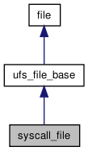

Implementation of file based on UNIX syscalls. More...
#include <syscall_file.h>
Inheritance diagram for syscall_file:

Collaboration diagram for syscall_file:

Public Member Functions | |
| syscall_file (const std::string &filename, int mode, int disk=-1) | |
| constructs file object | |
| request_ptr | aread (void *buffer, stxxl::int64 pos, size_t bytes, completion_handler on_cmpl) |
| Schedules asynchronous read request to the file. | |
| request_ptr | awrite (void *buffer, stxxl::int64 pos, size_t bytes, completion_handler on_cmpl) |
| Schedules asynchronous write request to the file. | |
Detailed Description
Implementation of file based on UNIX syscalls.
Constructor & Destructor Documentation
| syscall_file::syscall_file | ( | const std::string & | filename, | |
| int | mode, | |||
| int | disk = -1 | |||
| ) |
constructs file object
- Parameters:
-
filename path of file
- Attention:
- filename must be resided at memory disk partition
- Parameters:
-
mode open mode, see stxxl::file::open_modesdisk disk(file) identifier
Member Function Documentation
| request_ptr syscall_file::aread | ( | void * | buffer, | |
| stxxl::int64 | pos, | |||
| size_t | bytes, | |||
| completion_handler | on_cmpl | |||
| ) | [virtual] |
Schedules asynchronous read request to the file.
- Parameters:
-
buffer pointer to memory buffer to read into pos starting file position to read bytes number of bytes to transfer on_cmpl I/O completion handler
- Returns:
request_ptrobject, that can be used to track the status of the operation
Implements file.
References request_ptr::get(), and file::get_id().
| request_ptr syscall_file::awrite | ( | void * | buffer, | |
| stxxl::int64 | pos, | |||
| size_t | bytes, | |||
| completion_handler | on_cmpl | |||
| ) | [virtual] |
Schedules asynchronous write request to the file.
- Parameters:
-
buffer pointer to memory buffer to write from pos starting file position to write bytes number of bytes to transfer on_cmpl I/O completion handler
- Returns:
request_ptrobject, that can be used to track the status of the operation
Implements file.
References request_ptr::get(), and file::get_id().
The documentation for this class was generated from the following files:
- syscall_file.h
- syscall_file.cpp